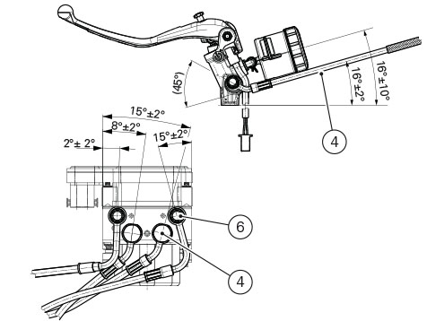
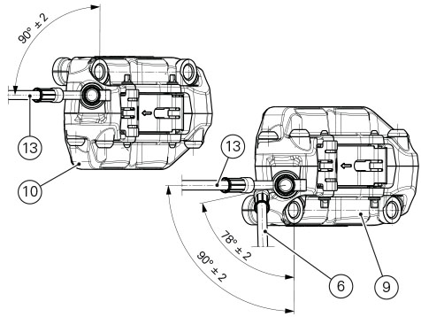
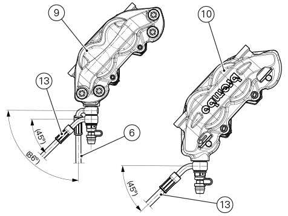
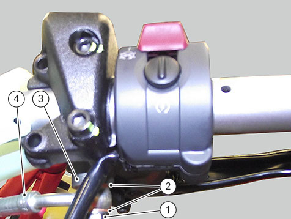
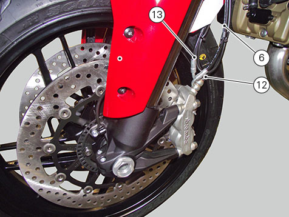
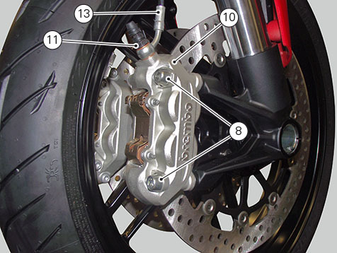
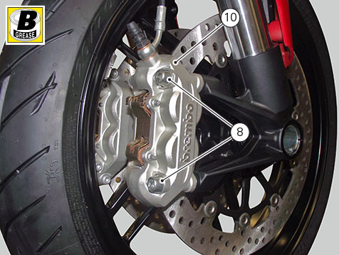
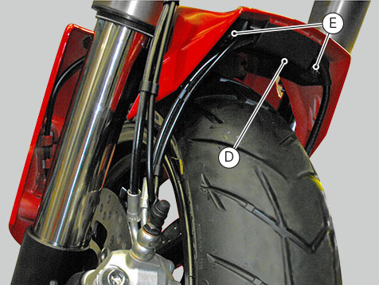

When reassembling the system pay utmost attention to correctly position hose (4) unions on master cylinder and hoses (3) and
(12) on callipers (9) and (10).
Warning
A wrongly routed hose may lead to brake system failure and hinder motorcycle moving parts correct operation. Comply with the
aiming shown in the figure.



When reconnecting the brake hose to the calliper or master cylinder, make sure to install the sealing washers (2) on either
side of the hose end fitting.
After orientating the hose union (4), tighten screw (1) to 23 Nm ±10%.

After orientating unions of hoses (6) and (13) on front brake callipers (10) and (9), tighten the special screws (11) and
(12) to 23 Nm ±10%.
Note
Make sure that internal hose coupling and the external hose coupling are installed in the left brake calliper.


Fit the left brake calliper (9) over the disc.
Apply the recommended grease to the screws (8).
Start the screws (8) in their thread by hand to secure the callipers to the fork legs.
Operate the brake lever two or three times until the circuit is pressurised and force the pads against the brake disc.
Repeat the operation for the right brake calliper (10).

Hold the lever pulled in towards the handgrip and simultaneously tighten the calliper screws (8) to a torque of 45 Nm ±5%.
Refit front brake hose protection (D) starting and tightening the screws (E) to 3.5 Nm ±10%.

Apply the recommended grease to the screws (5).
Fit front brake hose (6) in the bracket (7) on mudguard, and fasten it with screw (5).